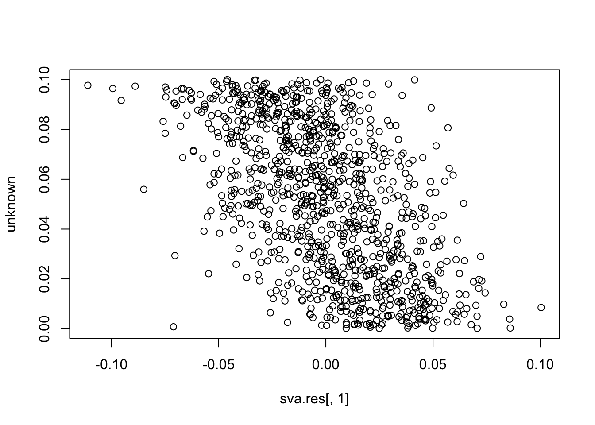
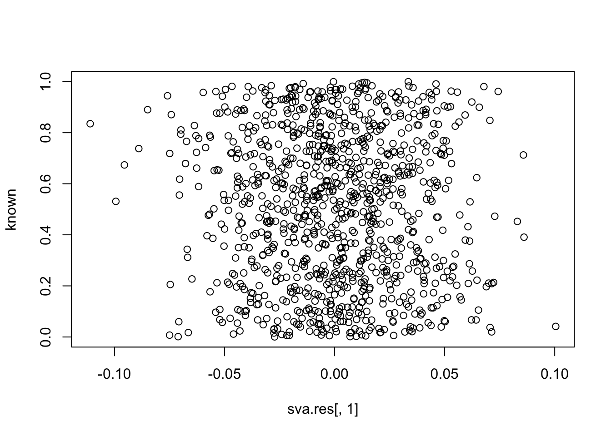
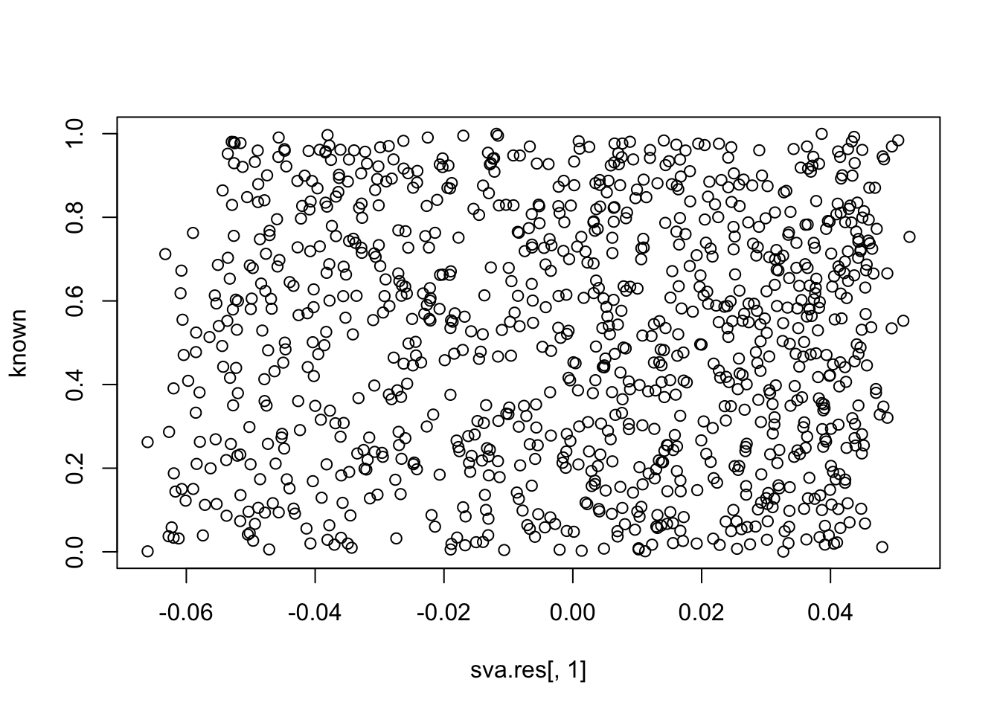

Reviewer 2 Simulation
Donghyung Lee
2018-07-31
Last updated: 2018-07-31
workflowr checks: (Click a bullet for more information)-
✖ R Markdown file: uncommitted changes
The R Markdown is untracked by Git. To know which version of the R Markdown file created these results, you’ll want to first commit it to the Git repo. If you’re still working on the analysis, you can ignore this warning. When you’re finished, you can runwflow_publishto commit the R Markdown file and build the HTML. -
✔ Environment: empty
Great job! The global environment was empty. Objects defined in the global environment can affect the analysis in your R Markdown file in unknown ways. For reproduciblity it’s best to always run the code in an empty environment.
-
✔ Seed:
set.seed(20180731)The command
set.seed(20180731)was run prior to running the code in the R Markdown file. Setting a seed ensures that any results that rely on randomness, e.g. subsampling or permutations, are reproducible. -
✔ Session information: recorded
Great job! Recording the operating system, R version, and package versions is critical for reproducibility.
-
Great! You are using Git for version control. Tracking code development and connecting the code version to the results is critical for reproducibility. The version displayed above was the version of the Git repository at the time these results were generated.✔ Repository version: e0cbded
Note that you need to be careful to ensure that all relevant files for the analysis have been committed to Git prior to generating the results (you can usewflow_publishorwflow_git_commit). workflowr only checks the R Markdown file, but you know if there are other scripts or data files that it depends on. Below is the status of the Git repository when the results were generated:
Note that any generated files, e.g. HTML, png, CSS, etc., are not included in this status report because it is ok for generated content to have uncommitted changes.Ignored files: Ignored: .DS_Store Ignored: .Rhistory Ignored: .Rproj.user/ Ignored: data/.DS_Store Ignored: inst/.DS_Store Ignored: inst/doc/.DS_Store Ignored: vignettes/.DS_Store Untracked files: Untracked: analysis/Brain_scRNASeq_neuron_vs_oligodendrocyte_single_run.Rmd Untracked: analysis/detecting_hidden_heterogeneity.Rmd Untracked: analysis/hidden_heterogeneity_glioblastoma.Rmd Untracked: analysis/reviewer2_sim.Rmd Untracked: analysis/scRNASeq_simulation.Rmd Untracked: analysis/sim_study_KF_HF_genes_overlap.Rmd Untracked: analysis/tSNE_post_IA-SVA_3celltypes.Rmd Untracked: analysis/tSNE_post_IA-SVA_Xin_Islets.Rmd Unstaged changes: Modified: analysis/_site.yml Modified: analysis/index.Rmd
Simulation 1
# Setting up the known and unknown factors.
set.seed(10000)
known <- runif(1000)
unknown <- runif(1000, 0, 0.1) # weak unknown factor
# Generating Poisson count data from log-normal means.
ngenes <- 5000
known.effect <- rnorm(ngenes, sd=2)
unknown.effect <- rnorm(ngenes, sd=2)
mat <- outer(known.effect, known) +
outer(unknown.effect, unknown) +
2 # to get decent-sized counts
counts <- matrix(rpois(length(mat), lambda=2^mat), nrow=ngenes)
library(SummarizedExperiment)
se <- SummarizedExperiment(list(counts=counts))
# Running IA-SVA, version 0.99.3.
library(iasva)
design <- model.matrix(~known)
res <- iasva(se, design, num.sv=5, permute = FALSE)
# IA-SVA running...
#
# SV 1 Detected!
#
# SV 2 Detected!
#
# SV 3 Detected!
#
# SV 4 Detected!
#
# SV 5 Detected!
#
# # of significant surrogate variables: 5
plot(res$sv[,1], unknown) 
cor(res$sv[,1], unknown) # these SVs are not the unknown factor (correlation ~= 0)
# [1] 0.05699341
cor(res$sv[,2], unknown)
# [1] -0.1317231
cor(res$sv[,3], unknown)
# [1] 0.06301151
cor(res$sv[,4], unknown)
# [1] -0.08444932
cor(res$sv[,5], unknown)
# [1] 0.1239618
cor(res$sv[,1], known) # ... but are instead the known factor (correlation ~= +/-1)
# [1] -0.9988192
cor(res$sv[,2], known)
# [1] 0.9971117
cor(res$sv[,3], known)
# [1] -0.9558875
cor(res$sv[,4], known)
# [1] 0.9982102
cor(res$sv[,5], known)
# [1] -0.9934994Compare to just naively taking the first PC of the residual matrix.
library(limma)
#
# Attaching package: 'limma'
# The following object is masked from 'package:BiocGenerics':
#
# plotMA
resid <- removeBatchEffect(log(assay(se)+1), covariates=known)
pr.out <- prcomp(t(resid), rank.=1)
plot(pr.out$x[,1], unknown) 
cor(pr.out$x[,1], unknown) # close to (-)1
# [1] 0.9766822
cor(pr.out$x[,1], known) # close to zero.
# [1] 2.35573e-17Compare to SVA
library(sva)
mod1 <- model.matrix(~known)
mod0 <- cbind(mod1[,1])
sva.res = svaseq(counts,mod1,mod0, n.sv=5)$sv
# Number of significant surrogate variables is: 5
# Iteration (out of 5 ):1 2 3 4 5
plot(sva.res[,1], unknown)
plot(sva.res[,1], known)
cor(sva.res[,1], unknown) # -0.55
# [1] -0.5522043
cor(sva.res[,1], known) # close to zero.
# [1] -0.04603016Simulation 2
set.seed(10000)
known <- runif(1000)
unknown <- runif(1000)
ngenes <- 5000
known.effect <- rnorm(ngenes, sd=2)
unknown.effect <- rnorm(ngenes, sd=2)
mat <- outer(known.effect, known) +
outer(unknown.effect, unknown) +
2 # to get decent-sized counts
counts <- matrix(rpois(length(mat), lambda=2^mat), nrow=ngenes)
library(SummarizedExperiment)
se <- SummarizedExperiment(list(counts=counts))
library(iasva)
design <- model.matrix(~known)
res <- iasva(se, design, num.sv=5, permute = FALSE)
# IA-SVA running...
#
# SV 1 Detected!
#
# SV 2 Detected!
#
# SV 3 Detected!
#
# SV 4 Detected!
#
# SV 5 Detected!
#
# # of significant surrogate variables: 5
cor(res$sv[,1], unknown) # first SV is the unknown factor.
# [1] -0.9960557
cor(res$sv[,2], unknown)
# [1] 0.7637275
cor(res$sv[,3], unknown)
# [1] 0.7564822
cor(res$sv[,4], unknown)
# [1] -0.7629373
cor(res$sv[,5], unknown)
# [1] 0.4760279
cor(res$sv[,1], known)
# [1] -0.004959888
cor(res$sv[,2], known) # but SVs 2-5 are correlated with the known factor...
# [1] -0.7014209
cor(res$sv[,3], known)
# [1] -0.7076734
cor(res$sv[,4], known)
# [1] -0.476617
cor(res$sv[,5], known)
# [1] -0.8898334
# Compare to SVA
library(sva)
mod1 <- model.matrix(~known)
mod0 <- cbind(mod1[,1])
sva.res = svaseq(counts,mod1,mod0, n.sv=3)$sv
# Number of significant surrogate variables is: 3
# Iteration (out of 5 ):1 2 3 4 5
plot(sva.res[,1], unknown)
plot(sva.res[,1], known)
cor(sva.res[,1], unknown) # close to (-)1
# [1] 0.989786
cor(sva.res[,2], unknown)
# [1] 0.03346006
cor(sva.res[,3], unknown)
# [1] -0.01770404
cor(sva.res[,1], known) # close to zero.
# [1] 0.0007217181
cor(sva.res[,2], known)
# [1] -0.04076436
cor(sva.res[,3], known)
# [1] -0.04114449

Session information
sessionInfo()
# R version 3.5.0 (2018-04-23)
# Platform: x86_64-apple-darwin15.6.0 (64-bit)
# Running under: macOS Sierra 10.12.6
#
# Matrix products: default
# BLAS: /Library/Frameworks/R.framework/Versions/3.5/Resources/lib/libRblas.0.dylib
# LAPACK: /Library/Frameworks/R.framework/Versions/3.5/Resources/lib/libRlapack.dylib
#
# locale:
# [1] en_US.UTF-8/en_US.UTF-8/en_US.UTF-8/C/en_US.UTF-8/en_US.UTF-8
#
# attached base packages:
# [1] parallel stats4 stats graphics grDevices utils datasets
# [8] methods base
#
# other attached packages:
# [1] limma_3.36.2 SummarizedExperiment_1.10.1
# [3] DelayedArray_0.6.1 matrixStats_0.53.1
# [5] Biobase_2.40.0 GenomicRanges_1.32.3
# [7] GenomeInfoDb_1.16.0 IRanges_2.14.10
# [9] S4Vectors_0.18.3 BiocGenerics_0.26.0
# [11] sva_3.28.0 BiocParallel_1.14.2
# [13] genefilter_1.62.0 mgcv_1.8-23
# [15] nlme_3.1-137 iasva_0.99.3
#
# loaded via a namespace (and not attached):
# [1] Rcpp_0.12.17 compiler_3.5.0 git2r_0.21.0
# [4] workflowr_1.0.1 XVector_0.20.0 R.methodsS3_1.7.1
# [7] R.utils_2.6.0 bitops_1.0-6 tools_3.5.0
# [10] zlibbioc_1.26.0 bit_1.1-14 digest_0.6.15
# [13] memoise_1.1.0 RSQLite_2.1.1 annotate_1.58.0
# [16] evaluate_0.10.1 lattice_0.20-35 Matrix_1.2-14
# [19] DBI_1.0.0 yaml_2.1.19 GenomeInfoDbData_1.1.0
# [22] stringr_1.3.1 knitr_1.20 cluster_2.0.7-1
# [25] bit64_0.9-7 rprojroot_1.3-2 grid_3.5.0
# [28] AnnotationDbi_1.42.1 survival_2.42-3 XML_3.98-1.11
# [31] rmarkdown_1.9 irlba_2.3.2 blob_1.1.1
# [34] magrittr_1.5 whisker_0.3-2 splines_3.5.0
# [37] backports_1.1.2 htmltools_0.3.6 xtable_1.8-2
# [40] stringi_1.2.2 RCurl_1.95-4.10 R.oo_1.22.0This reproducible R Markdown analysis was created with workflowr 1.0.1